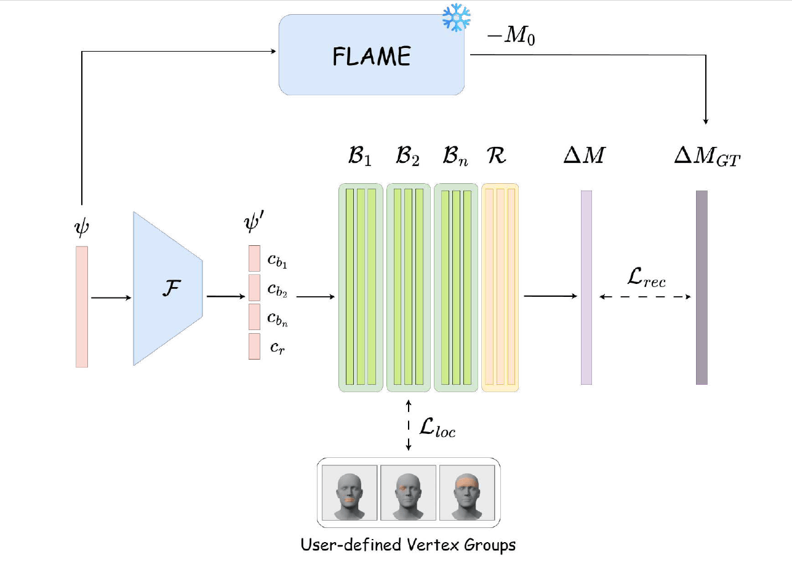
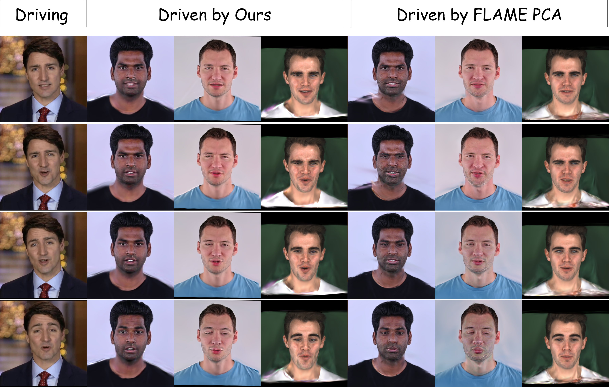
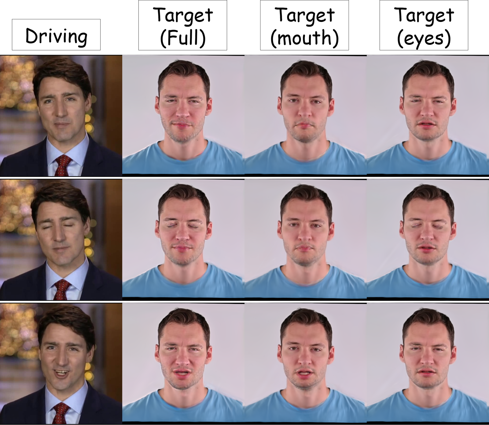
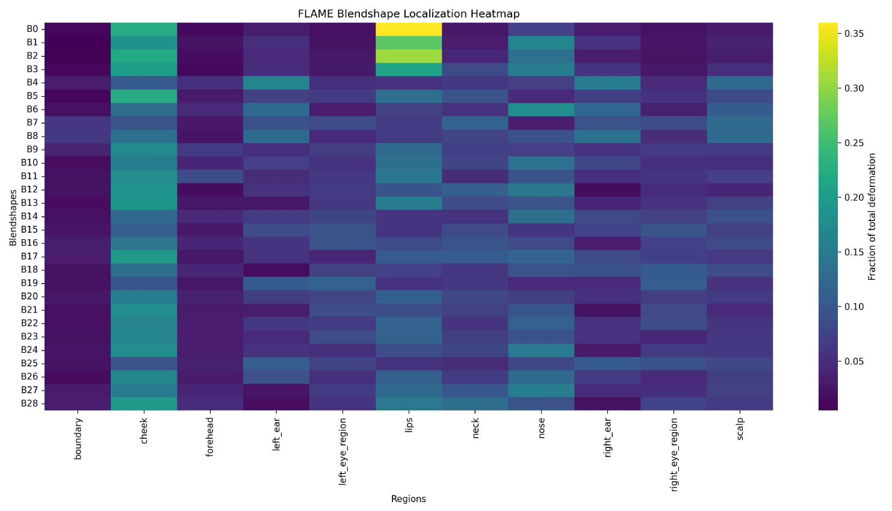
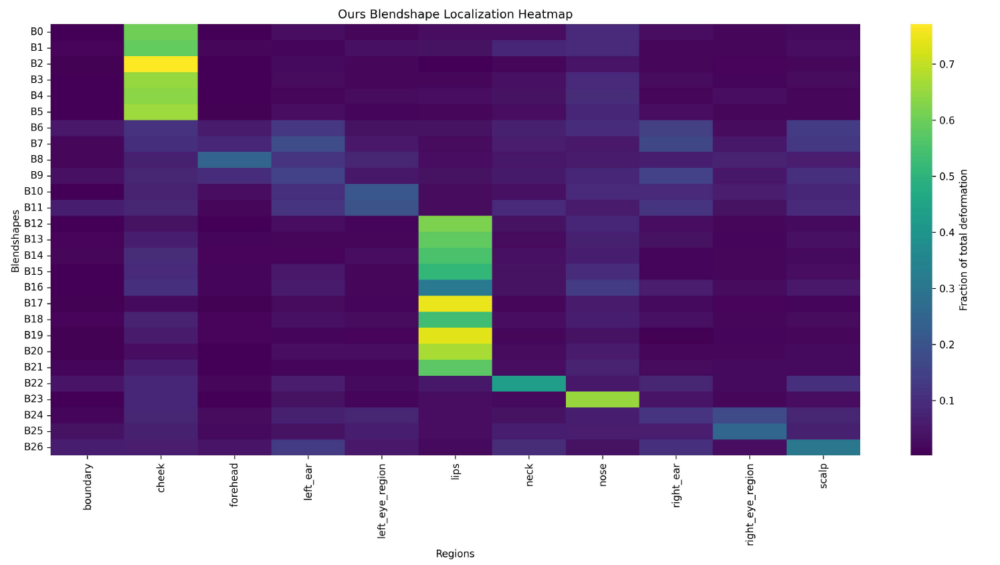
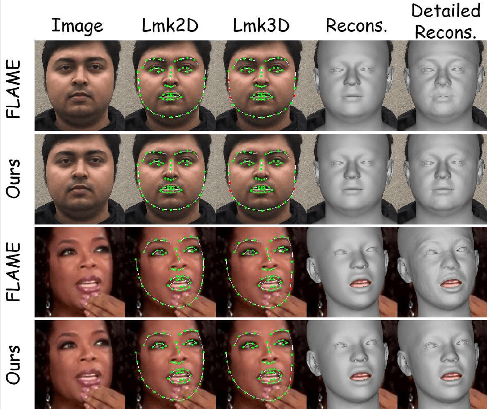
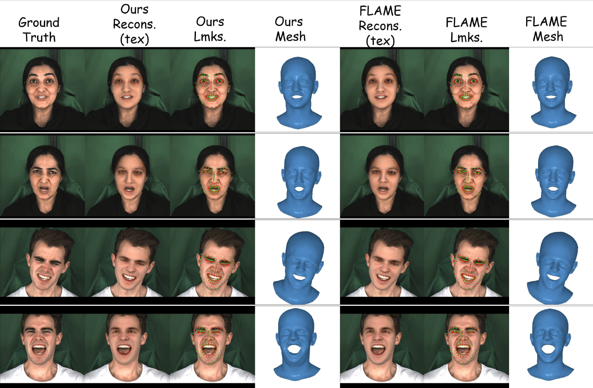

Brush-2-Blendshape: Interpretable User-Friendly Blendshapes for Editing Avatar Expressions
Abstract
Expressive avatar control demands the ability to sculpt individual facial regions independently — raising a brow without disturbing the mouth, or shaping a smile without shifting the eyes. Standard PCA-derived blendshapes make this impossible: by capturing statistical variance across the entire face, they produce spatially entangled bases where any single activation deforms multiple regions at once. We introduce Brush-2-Blendshape, a learned expression parameterization that respects facial locality by constraining each basis to its own user-defined region. A teacher–student framework distils expression bases from a statistical face model while a novel locality loss enforces their spatial separation during training; a small set of global residuals ensures nothing is lost in reconstruction. We demonstrate region-wise retargeting on Gaussian avatars — selectively transferring lip motion or brow raises independently, a level of control standard bases cannot provide. On the NoW benchmark our bases serve as drop-in replacements for PCA with comparable accuracy, while using 3X fewer bases.
Model Overview

Full Performance Transfer

Partwise Performance Transfer

Localization Visualized


Face Reconstruction with DECA and MICA


Video Presentation
BibTeX
@article{dey2025brush2blendshape,
title={Brush-2-Blendshape: Interpretable User-Friendly Blendshapes for Editing Avatar Expressions},
author={Dey, Avirup and Namboodiri, Vinay},
journal={Under Review},
year={2025},
url={https://avirupju.github.io/Brush2Blendshape-Website}
}